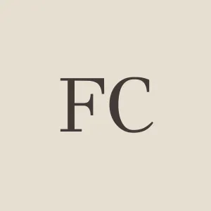

- Printed source
- François Cauche, Relation du voyage, in Relations veritables et curieuses de l’isle de Madagascar, et du Bresil (Paris: Augustin Courbé, 1651), pp. 130–131.
Dodo / Primary source
François Cauche
Relation du voyage

François CaucheImage & authority record ↗
01 / Publication1651Printed edition
02 / Place in accountMauritiusIsland account
Original text
p. 131 · extractIls ne font qu’vn œuf, blanc, gros comme vn pain d’vn sol, contre lequel ils mettent vne pierre blanche de la grosseur d’vn œuf de poules. Ils ponnent sur de l’herbe qu’ils amassent, & font leurs nids dans les forests, si on tuë le petit, on trouue vne pierre grise dans son gesier, nous les appellions, oiseaux de Nazaret1. La graisse est excellente pour adoucir les muscles, & nerfs.
English
They only lay one egg which is white, the size of a halfpenny roll, by the side of which they place a white stone the size of a hen’s egg. They lay on grass which they collect, and make their nests in the forests; if one kills the young one, a grey stone is found in the gizzard. We call them Oiseaux de Nazaret. The fat is excellent to give ease to the muscles and nerves.
English: Strickland & Melville, 1848, p. 126 ↗.
Edition
Further reading
- 01Hugh Edwin Strickland and Alexander Gordon Melville, The Dodo and Its Kindred (1848), pp. 21–22, 125–126. ↗
London: Reeve, Benham, and Reeve.
Reference
Cite this source
François Cauche, Relation du voyage, in Relations veritables et curieuses de l’isle de Madagascar, et du Bresil (Paris: Augustin Courbé, 1651), pp. 130–131.